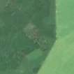
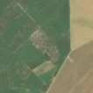

4,2 ha de pădure schimbată lângă Luica
Între 24 mai 2026 și 3 iunie 2026, pe aproximativ 4,2 ha de pădure din comuna Șoldanu, lângă Luica, județul Călărași, imaginile Sentinel-2 arată că vegetația a dispărut sau s-a schimbat puternic. În registrul public există o autorizație de tăiere pentru acest loc.
Autorizația de tăiere
probabil cu autorizație
Am găsit o autorizație de tăiere pentru locul ăsta, dar registrul nu ne lasă să confirmăm că acoperă exact tăierea pe care o vedem. Autorizația acoperă chiar locul, dar se terminase înainte să vedem schimbarea. Cel mai des e o tăiere făcută toamna sau iarna, cât autorizația era valabilă, pe care satelitul o vede abia primăvara; sau scosul lemnului după tăiere.
Ce se vede în poze: În poza detaliată din 2025 zona marcată era acoperită de pădure deasă, cu coroane de copaci una lângă alta. În poza «după» apare o suprafață deschisă, cu pământ și resturi de lemn, care se deosebește clar de pădurea verde din jur, deci copacii au fost tăiați.


Înainte și după: Copernicus Sentinel-2, 10 m pe pixel, conturul zonei cu portocaliu. Poza detaliată (Esri World Imagery) e de acum 1–4 ani: arată ce era acolo înainte, nu tăierea.
Pe scurt
- Identificator
- 20260603_44235_26555
- Locul
- Luica, comuna Șoldanu, județul Călărași (SIRUTA 105384)
- Coordonate (centru)
- 44.23477, 26.55534 · Google Maps · OpenStreetMap
- Suprafața
- 4,2 ha (din pixeli de 10 m; ± câțiva pixeli pe margine)
- Ultima imagine cu pădurea întreagă
- 24 mai 2026
- Prima imagine cu schimbarea
- 3 iunie 2026
- Imagini în care se vede schimbarea
- 6
- Cât de sigur e semnalul din satelit
- scăzută
- Autorizația cea mai apropiată
- APV 2500123200950 · Ocolul Silvic Mitreni, valabilă 6 mai 2025 – 31 iulie 2025, la 0 m de zonă
- Terenul
- pădure de stat, după amenajamentul silvic publicat
- Pădure pierdută în jur, alți ani
- 2022, 2023, 2025 (Hansen)
- Garda Forestieră
- București
Dacă vrei să verifici sau să sesizezi
- Pădurile din județul Călărași sunt în grija Gărzii Forestiere București, care controlează tăierile și dă amenzile.
- Autorizația găsită în zonă e emisă de Ocolul Silvic Mitreni.
- Formularul Gărzii Forestiere Naționale primește sesizări și fără nume. Trimite linkul acestei pagini, coordonatele și pozele. Dacă tăierea e în desfășurare, sună la 112.
- Autorizațiile și transporturile de lemn se pot căuta în Inspectorul Pădurii.
Pagina arată ce se vede din satelit și ce scrie în registrul public; nu e o dovadă în sine.
Cum citezi zona
Linkul acestei pagini nu se schimbă. Dacă zona iese vreodată de pe hartă, pagina rămâne, cu data și cu ce știam despre ea.
Pădurea RO, zona 20260603_44235_26555: 4,2 ha, Luica, comuna Șoldanu, județul Călărași; schimbare văzută din satelit între 24 mai 2026 și 3 iunie 2026. https://iliemihai.github.io/padurea-ro/zona/20260603_44235_26555/ (consultat la [data]). Date: CC BY 4.0.
Datele zonei: GeoJSON · toate zonele: date deschise · licența CC BY 4.0.
Istoricul zonei pe hartă
Starea se poate schimba când registrul publică o autorizație sau când analistul vede poze mai bune. O ținem aici, ca un link citat să arate și ce spuneam atunci.
Pe hartă cel târziu din 5 noiembrie 2026.
- 5 noiembrie 2026 – azi · probabil cu autorizație
Detalii tehnice, pentru verificare
De ce acest nivel de încredere:
- văzută schimbată în 6 imagini diferite
- peste 3 ha
- pădurea din jur e neschimbată
- fără părerea AI
- în poze, zona nu se schimbă vizibil mai mult decât pădurea din jur
Ce a văzut analistul cu context: Poza detaliată arată rășinoase cu coronament închis pe tot conturul; în Sentinel-2 «după» apare un petic alungit (aprox. 423×197 m, 4,2 ha) cu sol dezgolit și textură neregulată, în timp ce pădurea din jur rămâne verde, deci nu e sezon, foc sau ceață. Zona nu continuă ca fâșie în afara conturului și nu are formă geometrică de șantier. Un permis APV (Ocolul Silvic Mitreni) acoperă 94% din zonă, valabil 2025-05-06 – 2025-07-31, dar registrul indică «neacoperit», ceea ce trebuie verificat. Petecul pare vizibil încă din 2026-05-24, deci tăierea ar fi putut începe înainte de acea dată.
- Placa Sentinel-2
- 35TMK
- NDVI de referință
- 0.75
- NBR de referință
- 0.43
- Scăderea în pădurea din jur
- 0.01
- Persistență
- 0.91
- NDVI / NBR după
- 0.716 / 0.363
- Analistul cu context (model)
- taiere_rasa · 0.72
Cum se calculează fiecare: metodologia.
Pune harta zonei într-un articol
Copiază codul în articol (merge în majoritatea site-urilor de știri). Sau pune doar linkul: WhatsApp, Facebook și X arată singure poza zonei.